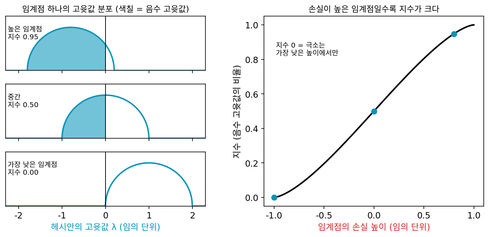
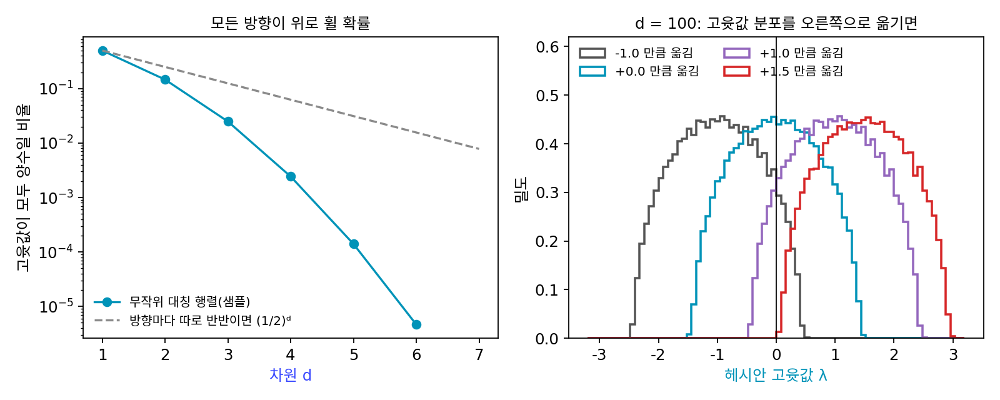
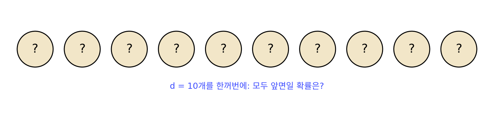
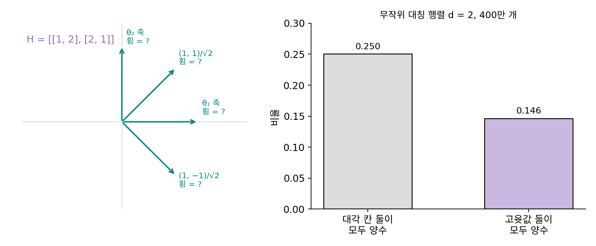
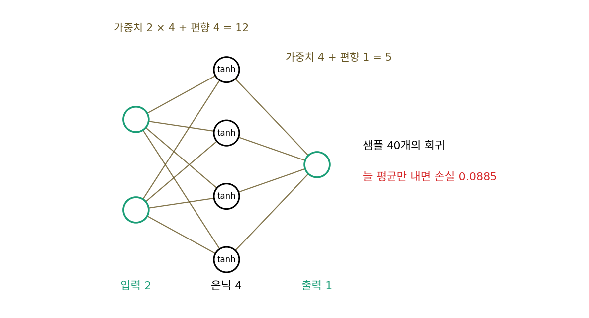

고차원의 지형: 극소보다 안장점이 흔하다
두 우물에는 고갯마루가 하나뿐이었고, 출발점을 띠 밖에서 고르면 뉴턴도 극소점에 닿았다. 그렇다면 안장점은 일부러 만든 장난감에서나 생기는 일일까? 파라미터가 수백만 개인 신경망 손실에서, 그래디언트가 0인 평평한 곳은 대부분 극소점(바닥)일까, 안장점(고갯마루)일까? 학습이 한참 동안 손실을 거의 줄이지 못하고 머무를 때, 그곳이 정말 더 내려갈 데가 없는 바닥인지 어떻게 알 수 있을까?
역사: 무작위 지형에서 평평한 곳을 세다
2007년 앨런 브레이(Alan Bray)와 데이비드 딘(David Dean)은 「고차원 공간 위 가우스 무작위장의 임계점 통계」를 『피지컬 리뷰 레터스』에 냈다. 무작위로 만든 매끄러운 지형(차원이 아주 높은 가우스 무작위장)에서 그래디언트가 0인 점, 곧 임계점이 손실 높이에 따라 어떻게 분포하는지 계산한 것이다. 그들이 얻은 그림은 이렇다. 임계점에서 헤시안의 고윳값은 위그너의 반원 모양으로 퍼지는데, 그 반원이 놓이는 자리가 손실 높이에 따라 옮겨 간다. 손실이 높은 임계점일수록 반원이 왼쪽으로 옮겨 음수 고윳값이 많고, 손실이 가장 낮은 곳 근처에서만 반원 전체가 양수 쪽에 놓인다. 그래서 손실이 높은 극소는 차원이 커질수록 기하급수적으로 드물어진다. 도팽과 동료들은 2014년 논문에서 브레이와 딘의 계산을 끌어와, 고차원 최적화를 어렵게 하는 것은 손실이 높은 극소가 아니라 안장점이 넘쳐나는 것이라고 주장했다. 그리고 그들이 아는 한 처음으로, 이 예측이 실제 신경망의 손실에서도 성립하는지를 재 보았다.


임계점 종류를 세는 거면 컴퓨터로 무작위 지형을 만들어서 그래디언트가 0인 점을 다 찾아보면 되잖아요.

차원이 1,000인 지형이라면 그래디언트가 0인 점이 몇 개나 있을까요? 그리고 찾은 점마다 무엇을 해야 하죠?

음… 셀 수 없을 만큼 많겠네요. 게다가 점마다 1,000 × 1,000 헤시안을 만들어서 고윳값을 구해야 종류를 알고요. 다 찾는 건 무리예요.

그래서 브레이와 딘은 세는 대신 계산했어요. 차원이 아주 높으면 고윳값이 위그너의 반원 모양으로 퍼진다는 무작위 행렬의 결과를 빌려서요.

그건 무작위 지형에서 한 계산이잖아요. 신경망의 손실이 무작위 지형이라는 보장은 없는데요.

그래요. 그래서 2014년의 측정이 그들이 아는 한 처음이었다는 게 중요해요. 예측은 2007년에 나왔는데, 실제 신경망에서 재 본 사람이 7년 동안 없었던 거예요.

반원이 0보다 왼쪽에 걸친 만큼이 음수 고윳값이라면, 극소이려면 반원 전체가 양수 쪽에 있어야 하잖아요. 차원이 커지면 그럴 확률은 얼마나 빨리 줄어들어요?
모든 방향이 위로 휠 확률
그래디언트가 0인 점이 극소점이려면 헤시안의 고윳값이 모두 양수여야 하므로, 방향이 둘이면 둘 다, 방향이 d개면 d개 모두 위로 휘어야 한다. 아무것도 모르는 채로 그 확률을 추정하려면, 헤시안 자리에 무작위로 만든 대칭 행렬을 놓고 고윳값이 모두 양수인 비율을 세면 된다(대각 칸은 표준정규분포, 비대각 칸은 분산 1/2인 정규분포에서 뽑은 대칭 행렬. 씨앗 고정).
| 차원 d | 뽑은 행렬 | 고윳값이 모두 양수인 비율 | 방향마다 따로 반반이라면 (1/2)d |
|---|---|---|---|
| 1 | 400만 | 0.500 | 0.5 |
| 2 | 400만 | 0.146 | 0.25 |
| 3 | 400만 | 0.0249 | 0.125 |
| 4 | 400만 | 0.00243 | 0.0625 |
| 5 | 400만 | 0.000140 | 0.031 |
| 6 | 2,000만 | 0.0000047 (93개) | 0.016 |
| 7 | 2,000만 | 0 (하나도 없음) | 0.0078 |
방향마다 동전을 던지듯 반반이라면 (1/2)d로 줄어들 텐데, 실제로는 그보다 훨씬 빨리 줄어 일곱 차원에서 이미 2,000만 개 가운데 하나도 나오지 않는다. 왜 동전 던지기보다 빨리 줄어드는지는 아래 문제 11에서 따져 본다. 데이비드 딘과 사티야 마줌다르(Satya Majumdar)는 2006년에, 이런 무작위 행렬의 고윳값이 모두 양수일 확률이 차원이 클 때 대략 exp(−(ln 3)/4 × d²)로, 차원의 제곱을 따라 기하급수적으로 줄어든다는 것을 보였다(ln 3/4 ≈ 0.275). d = 100이면 10의 −1,193제곱쯤이다.
무작위 행렬은 손실 높이와 상관없이 뽑은 것이다. 브레이와 딘의 그림처럼 손실 높이가 고윳값 분포를 옮긴다는 것은, 분포 전체에 같은 수를 더해 보면 흉내 낼 수 있다. d = 100인 무작위 대칭 행렬(고윳값이 대략 −1.37에서 1.37 사이에 퍼지게 크기를 맞춤) 2,000개에 같은 수를 더하면, 음수 고윳값의 비율은 0을 더할 때 0.50, 0.5를 더할 때 0.28, 1.0을 더할 때 0.092이고, 1.5를 더해야 거의 모든 행렬(99.8%)이 음수 고윳값을 하나도 갖지 않는다. 분포가 0을 완전히 넘어설 때까지는 음수 고윳값이 몇 개라도 남는다. 그래디언트가 0인 점에서 헤시안의 음수 고윳값의 비율을 그 점의 지수 (안장점에서 내려갈 수 있는 방향이 얼마나 되는가 / index)라 한다. 거듭제곱의 지수와는 다른 말이고, 이 장에서 맨말 「지수」는 이 뜻으로만 쓴다. 지수가 0이면 극소이고, 0보다 크면 내려갈 방향이 음수 고윳값의 비율만큼 남은 안장점이다. 브레이와 딘의 결론을 이 말로 옮기면, 손실이 높은 임계점일수록 지수가 크다.

ML에서: 작은 신경망에서 지수를 재다
도팽과 동료들은 10 × 10 크기로 줄인 MNIST(손글씨 숫자)와 CIFAR-10(작은 사진)으로 은닉층 하나인 작은 신경망을 학습시키는 손실에서, 뉴턴법으로 그래디언트가 0인 점을 모아 손실과 지수를 쟀다. 임계점들은 손실이 높을수록 지수가 큰 오르막 곡선 위에 모였다. 브레이와 딘이 무작위 지형에서 계산한 그림이 신경망 손실에서도 대체로 성립한 것이다. 그들은 손실이 높은 안장점 둘레에 휨이 0에 가까운 방향이 많아 평평한 고원이 생기고, 그 고원에서 1차 방법이 느려져 극소에 갇힌 것처럼 보인다고 적었다. 임계점을 모아 손실과 지수를 재는 일은 파라미터 17개짜리 신경망으로도 아주 작게 해 볼 수 있다. 결과는 아래 문제 12에서 읽는다.
문제 10. 동전이 모두 앞면일 확률
동전 d개를 한꺼번에 던진다. (가) d = 10일 때 모두 앞면일 확률은? (나) 하나라도 뒷면일 확률은? (다) 그래디언트가 0인 점에서 휨이 양수인지 음수인지가 방향마다 동전처럼 반반이라고 하자. 방향이 10개면 그 점이 극소일 확률은? 파라미터가 수백만 개라면?

(가)는 (1/2)¹⁰ = 1/1,024이고, (나)는 1 − 1/1,024 ≈ 0.999야.
(다)는 극소면 모든 방향이 위로 휘어야 하니까 「모두 앞면」 쪽이겠네. 방향이 10개면 1/1,024, 20개면 100만분의 1쯤.
하나라도 아래로 휜 방향이 있으면 안장점이니까, 그래디언트 0인 점은 거의 다 안장점이 돼.
그럼 파라미터가 수백만 개인 신경망에서 학습이 멈춘 듯 보이는 곳은 어떤 곳일 가능성이 클까요?

손실이 거의 줄지 않는다고 극소점에 갇힌 건 아닐 거예요. 수백만 방향 가운데 아래로 휜 방향이 몇 개라도 남아 있으면 그 방향으로 빠져나갈 수 있으니까요. 다만 이건 방향마다 따로 반반이라는 가정이고, 고윳값은 서로 영향을 주니까 실제 확률은 따로 확인해야 해요.
친구 다섯이 약속 시간에 다 맞춰 올 확률이 생각보다 훨씬 낮은 거랑 같네. 한 사람 한 사람은 반쯤은 제시간에 오는데도.
문제 11. 대각 칸이 모두 양수인데 안장점
(가) 대칭 행렬 [[1, 2], [2, 1]]의 대각 칸은 모두 양수다. 고윳값은? (나) 무작위 대칭 행렬 d = 2를 400만 개 뽑았더니 대각 칸 둘이 모두 양수인 비율은 0.250이었고, 고윳값 둘이 모두 양수인 비율은 0.146이었다. 대각 칸이 모두 양수인 행렬 가운데 고윳값도 모두 양수인 것은 얼마쯤인가? (다) 고윳값이 모두 양수일 비율은 왜 (1/2)d보다 빨리 주는가?

(가)는 대각 칸만 보면 두 축 모두 위로 휘었는데, 문제 2에서 대각 칸만으로는 모른다고 했으니까 대각선 (1, −1)/√2 방향도 재 볼게요. (1 − 4 + 1)/2 = −1, 음수예요. 고윳값은 3과 −1이라 안장점이에요.
(나)는 0.146 ÷ 0.250이니까, 대각 칸이 둘 다 양수여도 고윳값까지 양수인 건 58.6%야. 나머지 41%는 엇갈린 칸이 커서 안장점이 돼.
대칭 행렬의 고윳값 둘을 더하면 대각 칸의 합이 되죠. 대각 칸이 같은 채로 엇갈린 칸이 커지면 두 고윳값은 어떻게 되나요?
합은 그대로인 채 둘이 벌어지겠네요. [[a, b], [b, a]]로 해 보면 고윳값이 a ± b니까, b가 a보다 크면 작은 쪽이 음수로 밀려나요.

그럼 (다)는… 문제 10에서는 방향마다 반반이라고 놓고 (1/2)ᵈ로 셌잖아요. d = 2면 1/4일 줄 알았는데 고윳값 둘이 다 양수인 건 0.146이에요. 동전 던지기 추정이 후했네요. 왜 반씩보다 더 빨리 줄어요?

엇갈린 칸이 고윳값들을 서로 밀어내니까… 무작위 행렬에서 모두 한쪽에 모여 있기가 동전 던지기보다 어려운 거야. 차원이 커지면 서로 밀어내는 고윳값 쌍이 d(d − 1)/2개로 늘어나니까, 확률이 d가 아니라 d²을 따라 기하급수적으로 줄어드는 것도 그럴듯해.

선형대수에서 고윳값의 합이 대각합이라는 사실을 이렇게 쓰는구나.

시뮬레이션 표를 보면 일곱 차원만 돼도 2,000만 개 중에 하나도 없었어요.
문제 12. 파라미터 17개짜리 신경망의 임계점
입력 2개 → 은닉 단위 4개(tanh) → 출력 1개인 신경망(파라미터 17개)으로 샘플 40개의 회귀를 한다(씨앗 고정). 출력이 늘 정답의 평균인 모델의 손실은 0.0885다. 무작위 출발점 300곳과, 경사하강으로 먼저 학습시킨 점 300곳에서 출발해 그래디언트의 길이를 0으로 줄이는 반복(헤시안을 쓰는 뉴턴 스텝에 감쇠를 단 것)으로 그래디언트가 0인 점 106개를 찾았다. 음수 고윳값의 수 k(지수 = k/17)별로 정리하면 다음과 같다.
음수 고윳값 수 k 찾은 횟수 손실 최소 손실 평균 손실 최대 0 1 0.0067 0.0067 0.0067 3 11 0.0238 0.0267 0.0340 4 89 0.0248 0.0742 0.0885 5 4 0.0841 0.0858 0.0878 6 1 0.0871 0.0871 0.0871 (가) 찾은 점 가운데 극소는 몇 개이고, 그 손실은 다른 점들과 비교해 어떤가? (나) 지수와 손실 사이에 어떤 경향이 보이는가? (다) 106개 가운데 42개는 손실이 0.0885 ± 0.001이었고 모두 k가 4나 5였다. 이 점들은 어떤 상태의 신경망인가? (라) 학습 도중 손실이 0.0885 근처에서 한참 줄지 않는다면, 그곳은 더 내려갈 데가 없는 곳인가?

문제 10, 11대로라면 그래디언트가 0인 점은 대부분 안장점일 거야. 표를 보면 k = 0인 점이 딱 하나야. 106개 가운데 105개가 안장점이고.
그 하나뿐인 극소는 손실이 0.0067로 찾은 점들 가운데 가장 낮아요. 안장점은 가장 낮은 것도 0.0238이라 극소의 세 배가 넘고요.
k가 3이면 손실이 평균 0.027, 4면 0.074, 5면 0.086이야. 손실이 높은 점일수록 음수 고윳값이 많아. 지수와 손실의 상관계수가 0.63이야. 브레이와 딘이 무작위 지형에서 계산한 그림, 도팽 외가 작은 신경망에서 잰 그림과 같은 방향이야. 파라미터가 17개뿐인데도.
(다)는요? 손실 0.0885가 무슨 값이었죠?
출력이 늘 정답의 평균인 모델의 손실이에요. 그러니까 이 42개는 입력을 보고도 아무것도 맞히지 못하고, 입력이 무엇이든 거의 같은 값을 내는 신경망이에요. 그런데 거기서도 음수 고윳값이 네다섯 개라 내려갈 방향이 남아 있어요.
그럼 학습 곡선이 0.0885 근처에서 평평하게 누워 있는 모습을 보면 어떻게 판단해야 할까요?
손실이 줄지 않는다고 극소점이라고 볼 수 없어요. 방금 그 42개가 그랬으니까요.

그럼 둘을 어떻게 가려?
헤시안의 가장 작은 고윳값을 재 보면 돼. 음수면 고원이지 극소점이 아니야. 안장점 둘레는 그래디언트가 아주 작아서 경사하강이 오래 머물지만, 음수 고윳값 방향으로 조금만 밀려나면 다시 내려가. 극값 판정에서 2차 미분이 0이면 판정을 못 하던 것처럼, 그래디언트 0만으로는 아무것도 말할 수 없네.
학습 곡선이 한참 평평하다가 갑자기 뚝 떨어지는 걸 본 적이 있는데, 그게 안장점 근처에서 빠져나오는 순간이었을 수도 있겠네요.